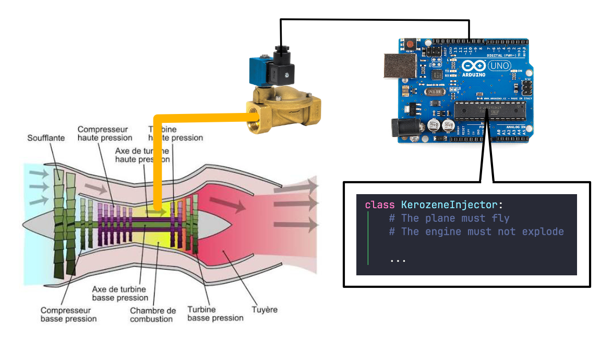

Vous êtes responsable des solutions que vous concevez
Aucune IA ne prendra cette responsabilité à votre place
Vous devez maitriser votre code juste comprendre ne suffit pas
Pour apprendre — votre situation aujourd’hui
Pour développer — situation d’un développeur
Règle : traitez chaque réponse comme une proposition à examiner, pas comme une vérité.
Un développeur peut utiliser l’IA pour :
Mais le développeur doit pouvoir :
Essayez de demander, dans cet ordre :
Gardez du temps pour réfléchir et écrire vous-même.
Un bon prompt précise :
Je suis étudiant en programmation en Python. Je sais déjà utiliser [notions]. Tu vas m'assister dans mon apprentissage. Ne donne pas de solution complète, seulemenmt des explications et des indices.
Énoncé : écrire une fonction
moyenne(notes) qui renvoie la moyenne d’une liste de notes.
Décidez ce qu’il faut faire si la liste est vide.
Avant de demander de l’aide :
N’écrivez pas immédiatement le code : formulez d’abord le comportement attendu.
Pour clarifier :
Je travaille sur une fonction moyenne(notes) en Python. aide-moi à préciser les entrées, la sortie et les questions à se poser à propos d'une liste vide.
Une fois que vous avez bien compris ce qu’il faut faire, vous pouvez formaliser cela en écrivant des tests unitaires
assert moyenne([10, 14]) == 12
Un test réussi est une preuve pour un cas testé, pas une preuve que le programme est toujours correct.
moyenne([10, 14]) : un cas “normal”Cette fonction qui devrait compter les nombres positifs :
def compter_positifs(valeurs): compteur = 0 for valeur in valeurs: if valeur > 0: compteur = 1 return compteur
[2, -1, 4] et [-3, 0]
?Sans oublier de poser le contexte, vous pouvez demander de l’aide à l’IA:
Cette fonction devrait compter les valeurs positives : [coller le code]. Avec [2, -1, 4], j'attends 2 mais j'obtiens 1. Explique ce que fait le code pas à pas et donne une piste, sans fournir la fonction corrigée.
Pour apprendre, demandez d’abord des explications, des indices et des tests similaires. Une solution complète peut être utile après avoir réussi l’exercice pour comparer à votre solution.
Pour chaque ligne, demandez-vous :
Ne collez pas et n’exécutez pas aveuglément du code inconnu, surtout s’il touche aux fichiers, au réseau ou au système.
Réaliser un Pong
Quels sous-problèmes peut-on identifier ?
Chaque étape est plus simple à comprendre et à tester que le problème complet.